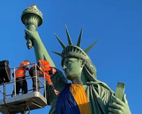
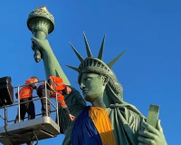

Україна
Після перемоги
Ми пишаємось нашим минулим, цінуємо те, що маємо, та готуємось до нашого спільного грандіозного майбутнього, яке обов’язково настане після перемоги!

Ми пишаємось нашим минулим, цінуємо те, що маємо, та готуємось до нашого спільного грандіозного майбутнього, яке обов’язково настане після перемоги!
Минуле
Формування ментальності українців

Історія
Фолькльор розповідає правду.
бо ми учасники, творці історіїта представляємо її, так як є
Саме тому козаки авторами та реалізаторами ідеї української держави та її легітимації у міжнародній спільноті як незалежної держави
Цінності
Відвага,вірність, здатність досамопожертви, любов до батьківщини- такі характе-ристики
Відвага та безстрашність
Турецький літописець Наїма писав про запорожців: "Можна впевнено сказати, що неможливо знайти на цілій землі сміливіших людей, які так мало б дбати про моє життя і так мало боялися смерті"
Блакитне небо на прапорі України та жовте жито, ще одна ознака
нашого прагнення думками відірватися від землі та полетіли в
безкрайнє небо,вийти за межі простору.
Саме тому українці реалізвули пригнення вийти за межі за
допомогою розвитку авіакострукторських заводів.
Підприємство "Антонов" створило гордість України, який став
символом українського непереможного духу-"Мрію"-найбільший
транспортний літак у світі.

Сьогодення:період трансформації
Ми показуємо усьому світові як говорити правду в очі та бути вірним своєму народу,своєму вибору та стояти за нього ми чеесні з собою та іншими,відважні та стоїмо один за одного
Ми подаємо приклад всьому світові,як жити в умовах невизначеності, та ще й знаходимо в собі сили підказувати іншим, що робити для підтримки миру у всьому світі ми креативні
Ми не піддаємось залякуванню та продовжуємо маленькими кроками досягати своеї мети ми сильні духом,в нас є воля.Свобода найбільша цінність для нас
Ми можемо жити без вказівок,та самоорганізовуватись,спираючись лище на гуманістичні,людські цінності ми за мир у всьому світі, і ми зможемо показати як цього досягти


 


Поділись думками,якою ти хочеш бачити Україну після перемоги?

Після перемоги, я хочу бачити Україну економічно розвинену, незламний, дружній, щасливий народ
Після перемоги, я хочу бачити Україну🇺🇦 процвітаючу, відбудовані інфраструктури та щоб люди могли повернутися в свої рідні домівки

Після перемоги я хочу бачити Україну в майбутньому сильну, велику та розквітаючу державу
Я бачу Україну після перемоги високотехнологічною державою
Україне після пермоги вступить до НАТО, тим самим розширить свої можливості до експорту і новітніх технологій.
Україна буде Футиристичною, більш розвиненою, щоб ріст життя було більшою, а також щоб збільшити територію України

Україна зможе зформувати свої
цінності орієнтири та транслювалти їх на
весь світ,а саме:Можливо все, навіть
те, у що ви не вірите! А вихід за рамки
самого себе-це більш гуманістично,
ніж постійно прагнути вийти за рамки
технологічного розвитку
Українці,як нація,стають зразком
волевиявлення та прикладом побудови
демократичних відносин "не згори до низу,а знизу догори"

Україна стає найбільш популярним та
поширеним символом свободи,віри,
правди та сміливості у всьому світі.
Все буде Україна!

Україна запрошує до першого в світі проекту колективної
відбудови країни,в якій будуть задіяні ініціативи різних країн
світу.Таким чином Україна дає можливість всьому світові відчути,що таке колективна стратегія та транслює нову
етику відносин в світі

Україна згадає про своє прагнення до неба та сонця,й
запропонує новий проект:щоб закінчити війни на Землі,
давайте будемо співпрацювати для нашого нового життя
в космосі
Ми-нація вільних людей,які будують нову свою країну!


Завантаж собі патріотичні наліпки
2022,Листопадов Богдан


{kind=link}
{kind=link}
{kind=link}
{kind=link}
{kind=link}
{kind=link}
{kind=link}
{kind=link}
{kind=link}
{kind=link}
{kind=link}
{kind=link}
{kind=link}
{kind=link}
{kind=link}
{kind=link}
{kind=link}
{kind=link}